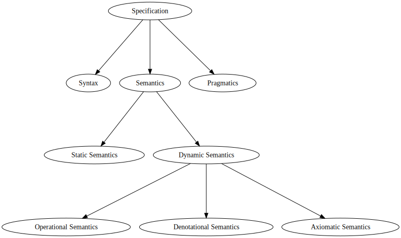
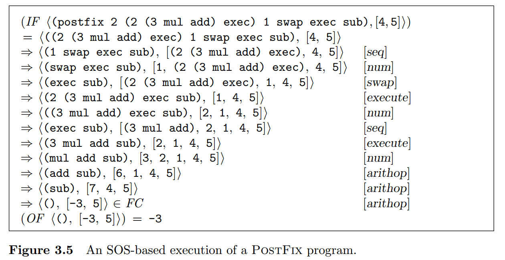

Course page: https://maxxk.github.io/programming-languages-2016/
Contact author:

— the semantics of the programming language statements at the run time.
The meaning of the program is specified as a sequence of computational steps for some abstract machine.
The meaning of the program is defined in terms of effects on the program statements on assertions about the program state.
The meaning of the program is formalized as a mathematical object (denotation).
(the most direct for imperative programmer)
Program execution may be understood as a step-by-step process that evolves by mechanical application of a fixed set of rules.
Rules describe how language constructs affect the state of some abstract machine that provides the mathematical model of computation. Each state of the abstract machine is called configuration.
Small-step operational semantics (Structural Operational Semantics, SOS): step-by-step transformation of configurations in abstract machine is defined by set of rewrite rules.
Big-step operational semantics (natural semantics): program execution is described in terms of recursive evaluation of subphrases of a program. Each nontrivial syntactic domain (subset of abstract syntax tree constructors) has some specific evaluation relation.
Consider programming language L with well-formed, well-typed programs P ∈ Prog, inputs I ∈ Inputs and answers A ∈ AnsExp.
Structural operational semantics for L is five-tuple S = 〈 CF, ⇒, FC, IF, OF 〉
\(⇒^*\) — reflexive transitive closure of ⇒. Sequence of transitions cf \(⇒^*\) cf' is called transition path.
Configuration cf is reducible if there is some cf' such that cf ⇒ cf', otherwisf cf is irreducible.
Transition relation \(⇒\) is deterministic if for every cf there is exactly one \(cf'\), otherwise ⇒ is nondeterministic.
Structural operational semantics for language L is five-tuple S = 〈 CF, ⇒, FC, IF, OF 〉
Stuck = Irreducible / FC — set of stuck states, nonfinal irreducible configurations (e.g. error states)
IF : (Prog × Inputs) → CF — input function, transforms a program and its inputs to an initial configuration
OF : FC → AnsExp — output function, maps a program and its inputs to an initial configuration
Outcome = AnsExp + ErrorResult (+ — disjoint union)
Deterministic behavior, if \(⇒\) is deterministic:
\[
beh_{det} : (\mathrm{Prog} × \mathrm{Inputs}) → \mathrm{Outcome}
\]
\[
beh_{det} 〈 P, I 〉 = \left\{ \begin{array}{lcl}
AnsExp ↦ Outcome (OF cf) & \text{if } & IF 〈P, I〉 ⇒^* cf ∈ FC, \\
ErrorResult & \text{if } & IF 〈P, I〉 ⇒^* cf ∈ Stuck, \\
∞ & \text{if } & IF 〈P, I〉 ⇒^∞.
\end{array} \right.
\]
\(\mathcal{P}(A)\) — powerset of \(A\).
\[ beh : (\mathrm{Prog} × \mathrm{Inputs}) → \mathcal{P}(\mathrm{Outcome}) \]
\[ o ∈ beh( 〈P, I〉 ) \; \mathrm{if} \; \left\{ \begin{array}{lcl} o = AnsExp ↦ Outcome (OF cf) & \text{and} & (IF 〈P, I〉 ⇒^* cf ∈ FC \\ o ∈ ErrorResult & \text{and} & IF 〈 P, I 〉 ⇒^* cf ∈ Stuck \\ o = ∞ & \text{and} & IF 〈P, I〉 ⇒^∞ \end{array}\right. \]
Usually relations on complex domains are specified in terms of formal inference system.
\[ \dfrac{antecedents}{consequences} [name] \]
\(antecedents = ⊘\) ⇒ rule is called axiom, otherwise progress rule.
Example axiom for stack-based language (placing constant on stack; configuration state = 〈 command sequence, stack 〉):
〈 N . Q, S〉 ⇒ 〈 Q, N . S 〉 [num]
If cf is a configuration in which first command in sequence is constant, then there is a transition from cf to cf' in which constant is moved from command sequence to the top of the stack.



Big-step operational semantics (natural semantics): program execution is described in terms of recursive evaluation of subphrases of a program. Each nontrivial syntactic domain (subset of abstract syntax tree constructors) has some specific evaluation relation.
E.g. $ →_{NE}$ for numerical expressions and \(→_{Prog}\) for programs.

Usually operational semantics is used to prove some of the following properties:
Turbak, Gifford. p. 85